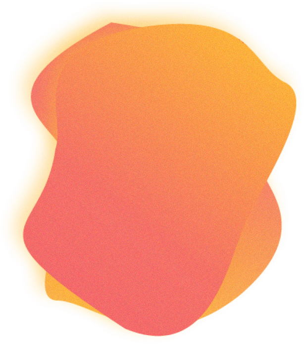

RÉALISATIONS


VIDÉO
FAÇADE

DESIGN
PORTRAITS
À PROPOS
Je suis un étudiant en Techniques d'intégration multimédia. Durant les dernières années, j'ai pu
développer des habiletés dans plusieurs domaines, tels que le
design, la programmation web, la conception de jeux vidéo, l'interactivité, l'animation, la
modélisation 3D et plus encore! Bien que plusieurs domaines m'intéressent, j'aimerais probablement
continuer ma carrière dans le web ou dans le domaine du spectacle, deux milieux qui me passionnent
énormément.